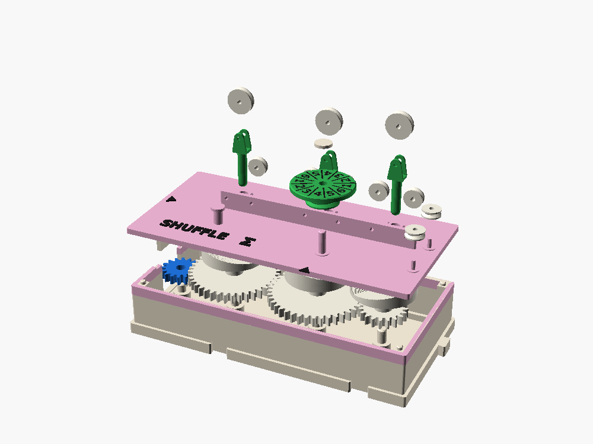

← All gear boxes · family: SPIN · FORK · SHUFFLE
SHUFFLE Σ
Turn the crank once and the dial shows a number from 1 to 6. The numbers look random, but nothing in the box is. Crank backwards and the same numbers come back in reverse. It's rand() made of gears and string.
2 cells · W in (16) · end box · cost 4 · repeats after 30,381 numbers

Crank, read, crank again
1. Crank
One turn of the crank box's handle is one number. Read it at the pointer under the green dial.
2. Replay
Crank backwards one turn and the number before comes back. Every number is fixed by where the gears are, so the sequence plays both ways.
3. Seed
Line the gears up on their marks and you start the same sequence every time. That starting place is the seed.
SPIN is random because your hand can't repeat itself. SHUFFLE is the other kind: a rule that only looks random. Put them side by side and you have the difference between a dice roll and srand(seed); rand() % 6 + 1.
Three waves, one string, one dial
This uses the model's own numbers. Each crank lifts or lowers the three rods, the string adds their heights, and the dial shows the sum folded onto 1 to 6.
Clocks that don't agree, added with a string
Three clocks
The crank turns a chain of three gears with 39, 41 and 19 teeth. One number moves the line 32 teeth, so each gear comes back to where it started after 39, 41 and 19 numbers. Those share no factor, so all three line up again only after 39 × 41 × 19 = 30,381 numbers.
Three waves
Each gear carries a heart cam, which lifts its rod at a steady rate and lowers it the same way. So each rod's height is a triangle wave, from 0 to 8 mm.
A string adds them
The cord is tied at one end, goes over a pulley on each rod and under fixed pulleys between, every leg straight up and down. Lift a rod by h and it takes up 2h of cord, so the free end moves twice the sum, exactly. Kelvin's tide-predicting machine added its waves this way in 1872.
Why the dial turns so far
Three waves added pile up in the middle, like the total of three dice. Read the sum straight off a scale and you'd see mostly middling numbers, each one close to the last. So the dial is geared fine: 1.5 mm of summed height turns it one 30-degree sector, it carries 1 to 6 twice, and it goes round more than once across the range. Only the sum "mod 9 mm" shows. That fold spreads the numbers evenly and breaks up the pattern, the same trick as SPIN's mod 6 and the low bits of a hash.
| Test (3,000 numbers, ideal parts) | Result | Pass mark (about) |
|---|---|---|
| Each number equally often (χ², 5 dof) | 0.2 | under 11 |
| Pairs of neighbors (χ², 35 dof, worst of lags 1 to 3) | 29 | under 50 |
| The same gears, no fold (sum read off a scale) | 1,000+ | fails |
| Teeth chosen by eye (26, 34, 38), with the fold | 170 | fails |
| Full period, counts of 1 to 6 | 5098 · 5120 · 5072 · 5002 · 5017 · 5072 | 30,381 numbers |
It's a fair toy generator, not a good one. Real generators pass hundreds of tests, and three waves added can't: there are slow patterns in the numbers that you'd find with enough cranking. Hunting for them is a good exercise.

Fit-checked in OpenSCAD, not yet printed
The fit check found three clashes, all fixed: the corner pulleys moved east, the follower bushes got notches for the fixed pulleys, and the rods' forks got narrower. Parts to buy: about 40 cm of 0.3 mm braided fishing line, a small rubber band, and 1.75 mm filament for eight pulley axles. On the first print, check that backlash and cord stretch stay well under one sector (3 mm of cord), or the replay test fails at the edges between numbers.